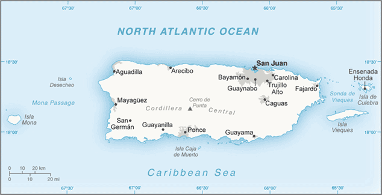
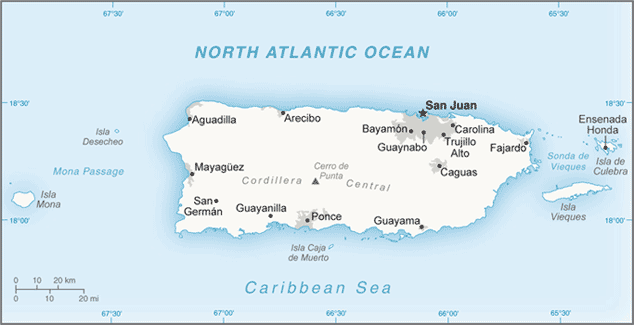

-
Introduction :: Puerto Rico
-
Background:Populated for centuries by aboriginal peoples, the island was claimed by the Spanish Crown in 1493 following Christopher COLUMBUS' second voyage to the Americas. In 1898, after 400 years of colonial rule that saw the indigenous population nearly exterminated and African slave labor introduced, Puerto Rico was ceded to the US as a result of the Spanish-American War. Puerto Ricans were granted US citizenship in 1917. Popularly elected governors have served since 1948. In 1952, a constitution was enacted providing for internal self-government. In plebiscites held in 1967, 1993, and 1998, voters chose not to alter the existing political status with the US, but the results of a 2012 vote left open the possibility of American statehood. Economic recession on the island has led to a net population loss since about 2005, as large numbers of residents moved to the US mainland. The trend has accelerated since 2010; in 2014, Puerto Rico experienced a net population loss to the mainland of 64,000, more than double the net loss of 26,000 in 2010. Hurricane Maria struck the island on 20 September 2017 causing catastrophic damage, including destruction of the electrical grid that had been cripled by Hurricane Irma just two weeks before. It was the worst storm to hit the island in eight decades, and damage is estimated in the tens of billions of dollars.
-
Geography :: Puerto Rico
-
Location:Caribbean, island between the Caribbean Sea and the North Atlantic Ocean, east of the Dominican RepublicGeographic coordinates:18 15 N, 66 30 WMap references:Central America and the CaribbeanArea:total: 9,104 sq kmland: 8,959 sq kmwater: 145 sq kmcountry comparison to the world: 171Area - comparative:slightly less than three times the size of Rhode IslandLand boundaries:0 kmCoastline:501 kmMaritime claims:territorial sea: 12 nmexclusive economic zone: 200 nmClimate:tropical marine, mild; little seasonal temperature variationTerrain:mostly mountains with coastal plain in north; precipitous mountains to the sea on west coast; sandy beaches along most coastal areasElevation:mean elevation: 261 melevation extremes: 0 m lowest point: Caribbean Sea1338 highest point: Cerro de PuntaNatural resources:some copper and nickel; potential for onshore and offshore oilLand use:agricultural land: 22% (2011 est.)arable land: 6.6% (2011 est.) / permanent crops: 5.6% (2011 est.) / permanent pasture: 9.8% (2011 est.)forest: 63.2% (2011 est.)other: 14.8% (2011 est.)Irrigated land:220 sq km (2012)Population distribution:population clusters tend to be found along the coast, the largest of these is found in and around San Juan; an exception to this is a sizeable population located in the interior of the island immediately south of the capital around Caguas; most of the interior, particularly in the western half of the island, is dominated by the Cordillera Central mountains, where population density is lowNatural hazards:periodic droughts; hurricanesEnvironment - current issues:soil erosion; occasional droughts cause water shortages; industrial pollutionGeography - note:important location along the Mona Passage - a key shipping lane to the Panama Canal; San Juan is one of the biggest and best natural harbors in the Caribbean; many small rivers and high central mountains ensure land is well watered; south coast relatively dry; fertile coastal plain belt in north
-
People and Society :: Puerto Rico
-
Population:3,294,626 (July 2018 est.)country comparison to the world: 134Nationality:noun: Puerto Rican(s) (US citizens)adjective: Puerto RicanEthnic groups:white 75.8%, black/African American 12.4%, other 8.5% (includes American Indian, Alaskan Native, Native Hawaiian, other Pacific Islander, and others), mixed 3.3% (2010 est.)
note: 99% of the population is Latino
Languages:Spanish, EnglishReligions:Roman Catholic 85%, Protestant and other 15%Age structure:0-14 years: 15.25% (male 256,866 /female 245,518)15-24 years: 13.39% (male 224,434 /female 216,664)25-54 years: 37.99% (male 595,818 /female 655,890)55-64 years: 13.14% (male 198,577 /female 234,490)65 years and over: 20.23% (male 286,630 /female 379,739) (2018 est.)population pyramid: The World Factbook Field Image ModalCentral America :: Puerto Rico Print
The World Factbook Field Image ModalCentral America :: Puerto Rico Print Image DescriptionThis is the population pyramid for Puerto Rico. A population pyramid illustrates the age and sex structure of a country's population and may provide insights about political and social stability, as well as economic development. The population is distributed along the horizontal axis, with males shown on the left and females on the right. The male and female populations are broken down into 5-year age groups represented as horizontal bars along the vertical axis, with the youngest age groups at the bottom and the oldest at the top. The shape of the population pyramid gradually evolves over time based on fertility, mortality, and international migration trends.
Image DescriptionThis is the population pyramid for Puerto Rico. A population pyramid illustrates the age and sex structure of a country's population and may provide insights about political and social stability, as well as economic development. The population is distributed along the horizontal axis, with males shown on the left and females on the right. The male and female populations are broken down into 5-year age groups represented as horizontal bars along the vertical axis, with the youngest age groups at the bottom and the oldest at the top. The shape of the population pyramid gradually evolves over time based on fertility, mortality, and international migration trends.
For additional information, please see the entry for Population pyramid on the Definitions and Notes page under the References tab.Dependency ratios:total dependency ratio: 49.6 (2015 est.)youth dependency ratio: 27.9 (2015 est.)elderly dependency ratio: 21.7 (2015 est.)potential support ratio: 4.6 (2015 est.)Median age:total: 42.2 yearsmale: 40.2 yearsfemale: 43.9 years (2018 est.)country comparison to the world: 34Population growth rate:-1.7% (2018 est.)country comparison to the world: 232Birth rate:8 births/1,000 population (2018 est.)country comparison to the world: 222Death rate:8.9 deaths/1,000 population (2018 est.)country comparison to the world: 65Net migration rate:-16.9 migrant(s)/1,000 population (2017 est.)country comparison to the world: 217Population distribution:population clusters tend to be found along the coast, the largest of these is found in and around San Juan; an exception to this is a sizeable population located in the interior of the island immediately south of the capital around Caguas; most of the interior, particularly in the western half of the island, is dominated by the Cordillera Central mountains, where population density is lowUrbanization:urban population: 93.6% of total population (2018)rate of urbanization: -0.14% annual rate of change (2015-20 est.)Major urban areas - population:2.454 million SAN JUAN (capital) (2018)Sex ratio:at birth: 1.02 male(s)/female (2017 est.)0-14 years: 1.04 male(s)/female (2017 est.)15-24 years: 1.05 male(s)/female (2017 est.)25-54 years: 0.92 male(s)/female (2017 est.)55-64 years: 0.83 male(s)/female (2017 est.)65 years and over: 0.76 male(s)/female (2017 est.)total population: 0.91 male(s)/female (2017 est.)Maternal mortality rate:14 deaths/100,000 live births (2015 est.)country comparison to the world: 138Infant mortality rate:total: 6.3 deaths/1,000 live births (2018 est.)male: 6.9 deaths/1,000 live births (2018 est.)female: 5.6 deaths/1,000 live births (2018 est.)country comparison to the world: 165Life expectancy at birth:total population: 81 years (2018 est.)male: 77.7 years (2018 est.)female: 84.5 years (2018 est.)country comparison to the world: 36Total fertility rate:1.21 children born/woman (2018 est.)country comparison to the world: 220Drinking water source:improved: urban: 93.6% of populationrural: 93.6% of populationtotal: 93.6% of populationunimproved: urban: 6.4% of populationrural: 6.4% of populationtotal: 6.4% of population (2001 est.)Sanitation facility access:improved: urban: 99.3% of population (2015 est.)rural: 99.3% of population (2015 est.)total: 99.3% of population (2015 est.)unimproved: urban: 0.7% of population (2015 est.)rural: 0.7% of population (2015 est.)total: 0.7% of population (2015 est.)HIV/AIDS - adult prevalence rate:NAHIV/AIDS - people living with HIV/AIDS:NAHIV/AIDS - deaths:NAMajor infectious diseases:note: active local transmission of Zika virus by Aedes species mosquitoes has been identified in this country (as of August 2016); it poses an important risk (a large number of cases possible) among US citizens if bitten by an infective mosquito; other less common ways to get Zika are through sex, via blood transfusion, or during pregnancy, in which the pregnant woman passes Zika virus to her fetus
Education expenditures:6% of GDP (2014)country comparison to the world: 36Literacy:definition: age 15 and over can read and write (2015 est.)total population: 93.3% (2015 est.)male: 92.8% (2015 est.)female: 93.8% (2015 est.)School life expectancy (primary to tertiary education):total: 14 years (2014)male: 13 years (2014)female: 15 years (2014)Unemployment, youth ages 15-24:total: 26.6% (2012 est.)male: 28.9% (2012 est.)female: 23.1% (2012 est.)country comparison to the world: 43 -
Government :: Puerto Rico
-
Country name:conventional long form: Commonwealth of Puerto Ricoconventional short form: Puerto Ricoabbreviation: PRetymology: Christopher COLUMBUS named the island San Juan Bautista (Saint John the Baptist) and the capital city and main port Cuidad de Puerto Rico (Rich Port City); over time, however, the names were shortened and transposed and the island came to be called Puerto Rico and its capital San JuanDependency status:unincorporated organized territory of the US; policy relations between Puerto Rico and the US conducted under the jurisdiction of the Office of the PresidentGovernment type:presidential democracy; a self-governing commonwealth in political association with the USCapital:name: San Juangeographic coordinates: 18 28 N, 66 07 Wtime difference: UTC-4 (1 hour ahead of Washington, DC, during Standard Time)Administrative divisions:none (territory of the US with commonwealth status); there are no first-order administrative divisions as defined by the US Government, but there are 78 municipalities (municipios, singular - municipio) at the second order; Adjuntas, Aguada, Aguadilla, Aguas Buenas, Aibonito, Anasco, Arecibo, Arroyo, Barceloneta, Barranquitas, Bayamon, Cabo Rojo, Caguas, Camuy, Canovanas, Carolina, Catano, Cayey, Ceiba, Ciales, Cidra, Coamo, Comerio, Corozal, Culebra, Dorado, Fajardo, Florida, Guanica, Guayama, Guayanilla, Guaynabo, Gurabo, Hatillo, Hormigueros, Humacao, Isabela, Jayuya, Juana Diaz, Juncos, Lajas, Lares, Las Marias, Las Piedras, Loiza, Luquillo, Manati, Maricao, Maunabo, Mayaguez, Moca, Morovis, Naguabo, Naranjito, Orocovis, Patillas, Penuelas, Ponce, Quebradillas, Rincon, Rio Grande, Sabana Grande, Salinas, San German, San Juan, San Lorenzo, San Sebastian, Santa Isabel, Toa Alta, Toa Baja, Trujillo Alto, Utuado, Vega Alta, Vega Baja, Vieques, Villalba, Yabucoa, YaucoIndependence:none (territory of the US with commonwealth status)National holiday:US Independence Day, 4 July (1776)Puerto Rico Constitution Day, 25 July (1952)Constitution:history: previous 1900 (Organic Act, or Foraker Act); latest ratified by referendum 3 March 1952, approved 3 July 1952, effective 25 July 1952 (2018)amendments: proposed by a concurrent resolution of at least two-thirds majority by the total Legislative Assembly membership; approval requires at least two-thirds majority vote by the membership of both houses and approval by a majority of voters in a special referendum; if passed by at least three-fourths Assembly vote, the referendum can be held concurrently with the next general election; constitutional articles such as the republican form of government or the bill of rights cannot be amended; amended 1952 (2018)Legal system:civil law system based on the Spanish civil code and within the framework of the US federal systemCitizenship:see United StatesSuffrage:18 years of age; universal; note - island residents are US citizens but do not vote in US presidential electionsJudicial branch:highest courts: Supreme Court (consists of the chief justice and 8 associate justices)judge selection and term of office: justices appointed by the governor and confirmed by majority Senate vote; judges serve until compulsory retirement at age 70subordinate courts: Court of Appeals; First Instance Court comprised of superior and municipal courtsExecutive branch:chief of state: President Donald J. TRUMP (since 20 January 2017); Vice President Michael R. PENCE (since 20 January 2017)head of government: Governor Ricardo ROSSELLO (since 2 January 2017)cabinet: Cabinet appointed by governor with the consent of the Legislative Assemblyelections/appointments: president and vice president indirectly elected on the same ballot by an Electoral College of 'electors' chosen from each state; president and vice president serve a 4-year term (eligible for a second term); under the US Constitution, residents of Puerto Rico do not vote in elections for US president and vice president; however, they may vote in Democratic and Republican party presidential primary elections; governor directly elected by simple majority popular vote for a 4-year term (no term limits); election last held on 8 November 2016 (next to be held in November 2020)election results: Ricardo ROSSELLO elected governor; percent of vote - Ricardo ROSSELLO (PNP) 41.8%, David BERNIER (PPD) 38.9%, Alexandra LUGARO (independent) 11.1%, Manuel CIDRE (independent) 5.7%Legislative branch:description: bicameral Legislative Assembly or Asamblea Legislativa consists of:
Senate or Senado (30 seats; 16 members directly elected in 8 2-seat constituencies by simple majority vote and 14 at-large members directly elected by simple majority vote to serve 4-year terms)
House of Representatives or Camara de Representantes (51 seats; members directly elected in single-seat constituencies by simple majority vote to serve 4-year terms)elections:
Senate - last held on 8 November 2016 (next to be held on 3 November 2020)
House of Representatives - last held on 8 November 2016 (next to be held on 3 November 2020)election results:
Senate - percent of vote by party - NA; seats by party - PNP 21, PPD 7, PIP 1, Independent 1
House of Representatives - percent of vote by party - NA; seats by party - PNP 34, PPD 16, PIP 1
note: Puerto Rico directly elects 1 member by simple majority vote to serve a 4-year term as a commissioner to the US House of Representatives; the commissioner can vote when serving on a committee and when the House meets as the Committee of the Whole House but not when legislation is submitted for a 'full floor' House vote; election of commissioner last held on 8 November 2016 (next to be held on 6 November 2018)Political parties and leaders:National Democratic Party [Charlie RODRIGUEZ]
National Republican Party of Puerto Rico [Jenniffer GONZALEZ]
New Progressive Party or PNP [Ricardo ROSSELLO] (pro-US statehood)
Popular Democratic Party or PPD [Alejandro GARCIA Padillo] (pro-commonwealth)
Puerto Rican Independence Party or PIP [Ruben BERRIOS Martinez] (pro-independence)International organization participation:AOSIS (observer), Caricom (observer), Interpol (subbureau), IOC, UNWTO (associate), UPU, WFTU (NGOs)Diplomatic representation in the US:none (territory of the US)Diplomatic representation from the US:none (territory of the US with commonwealth status)Flag description:five equal horizontal bands of red (top, center, and bottom) alternating with white; a blue isosceles triangle based on the hoist side bears a large, white, five-pointed star in the center; the white star symbolizes Puerto Rico; the three sides of the triangle signify the executive, legislative and judicial parts of the government; blue stands for the sky and the coastal waters; red symbolizes the blood shed by warriors, while white represents liberty, victory, and peacenote: design initially influenced by the US flag, but similar to the Cuban flag, with the colors of the bands and triangle reversed
National symbol(s):Puerto Rican spindalis (bird), coqui (frog); national colors: red, white, blueNational anthem:name: "La Borinquena" (The Puerto Rican)lyrics/music: Manuel Fernandez JUNCOS/Felix Astol ARTESnote: music adopted 1952, lyrics adopted 1977; the local anthem's name is a reference to the indigenous name of the island, Borinquen; the music was originally composed as a dance in 1867 and gained popularity in the early 20th century; there is some evidence that the music was written by Francisco RAMIREZ; as a commonwealth of the US, "The Star-Spangled Banner" is official (see United States)
-
Economy :: Puerto Rico
-
Economy - overview:
Puerto Rico had one of the most dynamic economies in the Caribbean region until 2006; however, growth has been negative for each of the last 11 years. The downturn coincided with the phaseout of tax preferences that had led US firms to invest heavily in the Commonwealth since the 1950s, and a steep rise in the price of oil, which generates most of the island's electricity.
Diminished job opportunities prompted a sharp rise in outmigration, as many Puerto Ricans sought jobs on the US mainland. Unemployment reached 16% in 2011, but declined to 11.5% in December 2017. US minimum wage laws apply in Puerto Rico, hampering job expansion. Per capita income is about two-thirds that of the US mainland.
The industrial sector greatly exceeds agriculture as the locus of economic activity and income. Tourism has traditionally been an important source of income with estimated arrivals of more than 3.6 million tourists in 2008. Puerto Rico's merchandise trade surplus is exceptionally strong, with exports nearly 50% greater than imports, and its current account surplus about 10% of GDP.
Closing the budget deficit while restoring economic growth and employment remain the central concerns of the government. The gap between revenues and expenditures amounted to 0.6% of GDP in 2016, although analysts believe that not all expenditures have been accounted for in the budget and a better accounting of costs would yield an overall deficit of roughly 5% of GDP. Public debt remained steady at 92.5% of GDP in 2017, about $17,000 per person, or nearly three times the per capita debt of the State of Connecticut, the highest in the US. Much of that debt was issued by state-run schools and public corporations, including water and electric utilities. In June 2015, Governor Alejandro GARCIA Padilla announced that the island could not pay back at least $73 billion in debt and that it would seek a deal with its creditors.
Hurricane Maria hit Puerto Rico square on in September 2017, causing electrical power outages to 90% of the territory, as well as extensive loss of housing and infrastructure and contamination of potable water. Despite massive efforts, more than 40% of the territory remained without electricity as of yearend 2017. As a result of the destruction, many Puerto Ricans have emigrated to the US mainland.
GDP (purchasing power parity):$130 billion (2017 est.)$133.1 billion (2016 est.)$134.9 billion (2015 est.)note: data are in 2017 dollars
country comparison to the world: 81GDP (official exchange rate):$104.2 billion (2017 est.) (2017 est.)GDP - real growth rate:-2.4% (2017 est.)-1.3% (2016 est.)-1% (2015 est.)country comparison to the world: 207GDP - per capita (PPP):$39,400 (2017 est.)$39,000 (2016 est.)$38,800 (2015 est.)note: data are in 2017 dollars
country comparison to the world: 47GDP - composition, by end use:household consumption: 87.7% (2017 est.)government consumption: 12.2% (2017 est.)investment in fixed capital: 11.7% (2017 est.)investment in inventories: 0.5% (2017 est.)exports of goods and services: 117.8% (2017 est.)imports of goods and services: -129.8% (2017 est.)GDP - composition, by sector of origin:agriculture: 0.8% (2017 est.)industry: 50.1% (2017 est.)services: 49.1% (2017 est.)Agriculture - products:sugarcane, coffee, pineapples, plantains, bananas; livestock products, chickensIndustries:pharmaceuticals, electronics, apparel, food products, tourismIndustrial production growth rate:-2.1% (2017 est.)country comparison to the world: 184Labor force:1.139 million (December 2014 est.)country comparison to the world: 142Labor force - by occupation:agriculture: 2.1%industry: 19%services: 79% (2005 est.)Unemployment rate:10.8% (2017 est.)11.8% (2016 est.)country comparison to the world: 146Population below poverty line:NABudget:revenues: 9.268 billion (2017 est.)expenditures: 9.974 billion (2017 est.)Taxes and other revenues:8.9% (of GDP) (2017 est.)country comparison to the world: 217Budget surplus (+) or deficit (-):-0.7% (of GDP) (2017 est.)country comparison to the world: 68Public debt:51.6% of GDP (2017 est.)50.1% of GDP (2016 est.)country comparison to the world: 97Fiscal year:1 July - 30 JuneInflation rate (consumer prices):1.8% (2017 est.)-0.3% (2016 est.)country comparison to the world: 95Commercial bank prime lending rate:5% (31 December 2017 est.)4% (31 December 2016 est.)country comparison to the world: 151Current account balance:$0 (2017 est.)$0 (2016 est.)country comparison to the world: 66Exports:$73.17 billion (2017 est.)$73.2 billion (2016 est.)country comparison to the world: 41Exports - commodities:chemicals, electronics, apparel, canned tuna, rum, beverage concentrates, medical equipmentImports:$49.01 billion (2017 est.)$48.86 billion (2016 est.)country comparison to the world: 54Imports - commodities:chemicals, machinery and equipment, clothing, food, fish, petroleum productsDebt - external:$56.82 billion (31 December 2010 est.)$52.98 billion (31 December 2009 est.)country comparison to the world: 61Exchange rates:the US dollar is used
-
Energy :: Puerto Rico
-
Electricity access:population without electricity: 357,805 (2012)electrification - total population: 91% (2012)electrification - urban areas: 91% (2012)electrification - rural areas: 80% (2012)Electricity - production:20.95 billion kWh (2016 est.)country comparison to the world: 75Electricity - consumption:19.48 billion kWh (2016 est.)country comparison to the world: 72Electricity - exports:0 kWh (2016 est.)country comparison to the world: 185Electricity - imports:0 kWh (2016 est.)country comparison to the world: 187Electricity - installed generating capacity:6.294 million kW (2016 est.)country comparison to the world: 76Electricity - from fossil fuels:94% of total installed capacity (2016 est.)country comparison to the world: 47Electricity - from nuclear fuels:0% of total installed capacity (2017 est.)country comparison to the world: 168Electricity - from hydroelectric plants:2% of total installed capacity (2017 est.)country comparison to the world: 142Electricity - from other renewable sources:4% of total installed capacity (2017 est.)country comparison to the world: 117Crude oil - production:0 bbl/day (2017 est.)country comparison to the world: 187Crude oil - exports:0 bbl/day (2015 est.)country comparison to the world: 181Crude oil - imports:0 bbl/day (2015 est.)country comparison to the world: 182Crude oil - proved reserves:0 bbl (1 January 2018 est.)country comparison to the world: 183Refined petroleum products - production:0 bbl/day (2015 est.)country comparison to the world: 190Refined petroleum products - consumption:98,000 bbl/day (2016 est.)country comparison to the world: 81Refined petroleum products - exports:18,420 bbl/day (2015 est.)country comparison to the world: 70Refined petroleum products - imports:127,100 bbl/day (2015 est.)country comparison to the world: 46Natural gas - production:0 cu m (2017 est.)country comparison to the world: 185Natural gas - consumption:1.303 billion cu m (2017 est.)country comparison to the world: 86Natural gas - exports:0 cu m (2017 est.)country comparison to the world: 170Natural gas - imports:1.303 billion cu m (2017 est.)country comparison to the world: 57Natural gas - proved reserves:0 cu m (1 January 2014 est.)country comparison to the world: 183Carbon dioxide emissions from consumption of energy:19.85 million Mt (2017 est.)country comparison to the world: 87
-
Communications :: Puerto Rico
-
Telephones - fixed lines:total subscriptions: 783,739 (2017 est.)subscriptions per 100 inhabitants: 23 (2017 est.)country comparison to the world: 81Telephones - mobile cellular:total subscriptions: 3,389,402 (2017 est.)subscriptions per 100 inhabitants: 101 (2017 est.)country comparison to the world: 137Telephone system:general assessment: modern system integrated with that of the US by high-capacity submarine cable and Intelsat with high-speed data capability (2016)domestic: digital telephone system; mobile-cellular services (2016)international: country code - 1-787, 939; submarine cables provide connectivity to the US, Caribbean, Central and South America; satellite earth station - 1 Intelsat (2016)Broadcast media:more than 30 TV stations operating; cable TV subscription services are available; roughly 125 radio stations (2007)Internet country code:.prInternet users:total: 2,873,895 (July 2016 est.)percent of population: 80.3% (July 2016 est.)country comparison to the world: 98Broadband - fixed subscriptions:total: 660,100 (2017 est.)subscriptions per 100 inhabitants: 20 (2017 est.)country comparison to the world: 76
-
Transportation :: Puerto Rico
-
Airports:29 (2013)country comparison to the world: 119Airports - with paved runways:total: 17 (2017)over 3,047 m: 2 (2017)2,438 to 3,047 m: 1 (2017)1,524 to 2,437 m: 2 (2017)914 to 1,523 m: 7 (2017)under 914 m: 5 (2017)Airports - with unpaved runways:total: 12 (2013)1,524 to 2,437 m: 1 (2013)914 to 1,523 m: 1 (2013)under 914 m: 10 (2013)Roadways:total: 26,862 km (includes 454 km of expressways) (2012)country comparison to the world: 100Ports and terminals:major seaport(s): Ensenada Honda, Mayaguez, Playa de Guayanilla, Playa de Ponce, San Juancontainer port(s) (TEUs): San Juan (1,210,503) (2015)LNG terminal(s) (import): Guayanilla Bay
-
Military and Security :: Puerto Rico
-
Military branches:no regular indigenous military forces; paramilitary National Guard, Police ForceMilitary - note:defense is the responsibility of the US
-
Transnational Issues :: Puerto Rico
-
Disputes - international:increasing numbers of illegal migrants from the Dominican Republic cross the Mona Passage to Puerto Rico each year looking for work
Central America ::
Puerto Rico